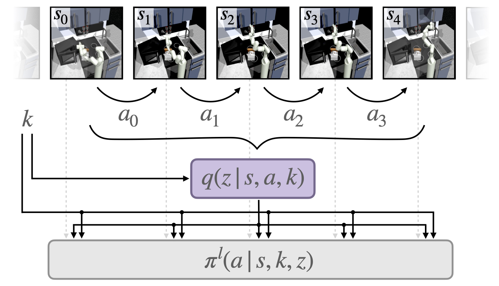
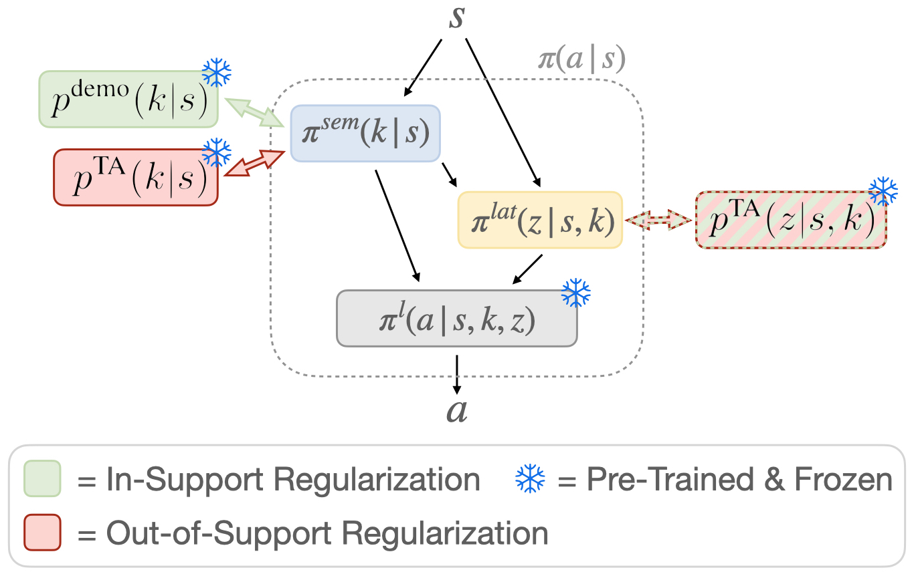
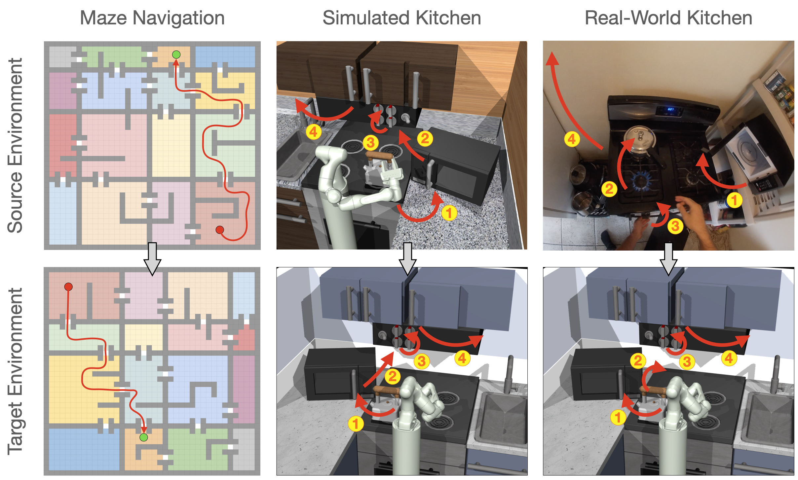
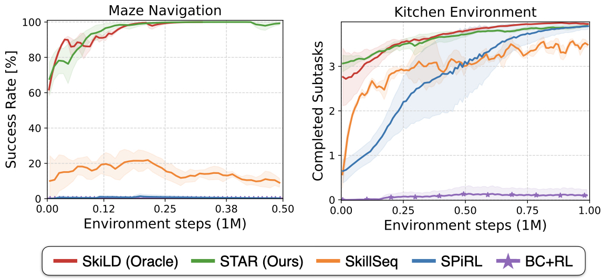
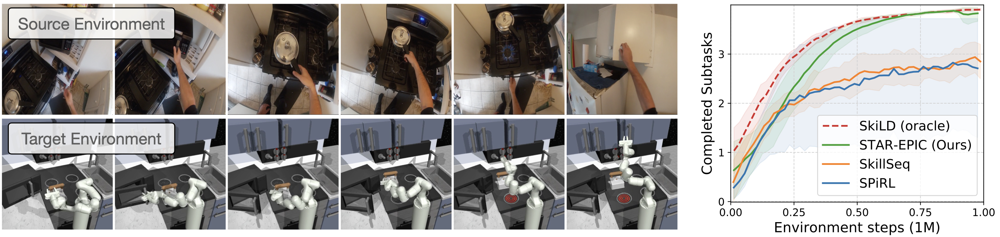

We propose an approach for semantic imitation, which uses demonstrations from a source domain, e.g. human videos, to accelerate reinforcement learning (RL) in a different target domain, e.g. a robotic manipulator in a simulated kitchen. Instead of imitating low-level actions like joint velocities, our approach imitates the sequence of demonstrated semantic skills like "opening the microwave" or "turning on the stove". This allows us to transfer demonstrations across environments (e.g. real-world to simulated kitchen) and agent embodiments (e.g. bimanual human demonstration to robotic arm). We evaluate on three challenging cross-domain learning problems and match the performance of demonstration-accelerated RL approaches that require in-domain demonstrations. In a simulated kitchen environment, our approach learns long-horizon robot manipulation tasks, using less than 3 minutes of human video demonstrations from a real-world kitchen. This enables scaling robot learning via the reuse of demonstrations, e.g. collected as human videos, for learning in any number of target domains.
Overview

Learning Semantic Skills
We first train a policy for executing semantic skills like "open microwave" or "turn on stove". We assume access to a play-style dataset of diverse agent interactions, e.g. collected via teleoperation or from previous RL runs. Each trajectory has annotations for the executed skills from a set of K semantic skills. We use behavior cloning on randomly sampled subsequences from the dataset to train a skill policy that is conditioned on the semantic skill k and a latent skill variable z that captures execution details of the skill, e.g. how to open the microwave.
Extracting Human Demo Skills
Given a human demonstration, our goal is to extract the executed semantic skills in order to imitate them in the target environment. We use a pre-trained action recognition model from a large-scale ego-centric human video datasets (EPIC Kitchens, Damen et al.) to extract step-wise action detections on the human video demonstration. We map the output action detections to our set of K semantic skills and use them to guide learning in the target environment.

Semantic Skill Transfer
Finally, we use the extracted semantic skills from the human video demonstration to guide training in a target environment, e.g. for a robotic kitchen manipulation task. Instead of rigidly following the sequence of demonstrated skills, we use the human demonstrated skills as a prior and regularize the policy towards it during training. This allows the policy to deviate from the demonstrated skill sequence if necessary, e.g. if the initial conditions in the target environment don't exactly match those in the demonstration environment.
Environments

We evaluate our approach on three cross-environment imitation problems: a maze navigation task in which the agent needs to follow a sequence of colored rooms in a new maze layout, a simulated kitchen task in which the agent needs to execute a sequence of four kitchen skills in a new kitchen and a human-to-robot kitchen imitation task where the robot needs to imitate a sequence of kitchen task from human demonstration videos. All environments require imitation of the semantic skills from the demonstrations -- regular imitation of low-level actions does not lead to task success.
Experimental Results

For the two simulated environments, maze navigation and kitchen manipulation, we find that our approach STAR (Semantic Transfer Accelerated RL) outperforms skill-based RL without demonstrations (SPiRL) and roughly matches performance to an oracle approach with access to demonstrations in the target domain (SkiLD).
This demonstrates that STAR effectively transfers the demonstrated semantic skills to the target environment to accelerate policy learning. Conventional imitation approaches that are not designed for cross-environment imitation (BC) do not make progress on the task since successful task execution in the target environment requires completely different low-level actions compared to the demonstrations.
Imitation from Human Demonstration

On the human-to-robot imitation task we show that STAR successfully follows the demonstrated sequence of semantic skills in the target environment. STAR substantially accelerates learning over approaches without demonstation guidance using only three minutes of human video demonstration, collected in an unseen kitchen environment. STAR nearly matches efficiency of an oracle with access to demonstrations in the target environment, demonstrating the promise of cross-domain imitation for scalable robot learning from easy-to-collect human demonstrations.
Source Code
We are planning to soon release our PyTorch on the github page. Stay tuned!
@article{pertsch2022star,
title={Cross-Domain Transfer via Semantic Skill Imitation},
author={Karl Pertsch and Ruta Desai and Vikash Kumar and Franziska Meier
and Joseph J. Lim and Dhruv Batra and Akshara Rai},
journal={6th Conference on Robot Learning},
year={2022},
}